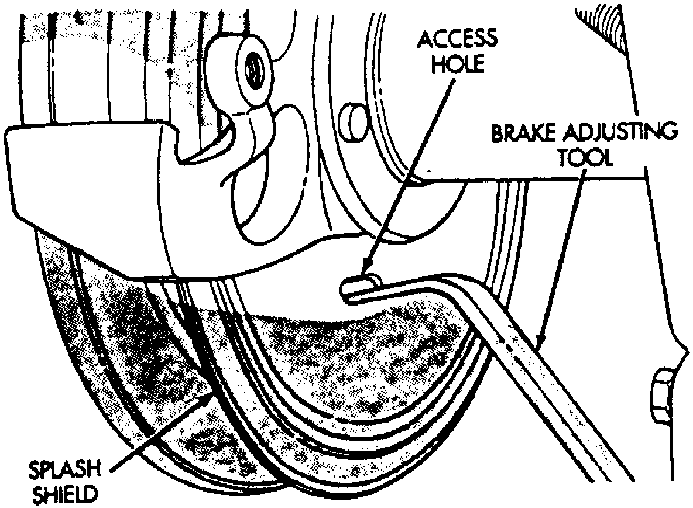

Rear
REMOVAL1. Raise vehicle.
2. Remove wheel and tire assembly.
3. Remove brake caliper.
Fig. 6 Parking Brake Adjustment:

4. Remove access plug from splash shield and back off parking brake shoes by rotating adjuster screw star wheel with brake tool. At driver side rear wheel, rotate adjuster screw star wheel clockwise to back off shoes. At passenger side wheel, rotate star wheel in counterclockwise direction. Direction of rotation is while looking from rear to front of vehicle.
5. If rotor and/or axle hub contact surfaces are heavily rusted, apply rust penetrant oil to rotor and axle hub and through spaces around wheel studs.
6. Remove push nuts securing rotor to axle shaft studs.
7. Work rotor off axle hub and studs. Use plastic or rawhide mallet to loosen rotor if necessary.
8. Clean and inspect rotor braking surfaces. Refinish, or replace rotor if necessary.
INSTALLATION
1. Clean axle hub and hub bore in rotor with wire brush, or emery cloth.
2. Install rotor on axle hub.
3. Install disc brake caliper.
4. Install wheel and tire assembly and lower vehicle.
5. Adjust parking brake shoes. Use brake tool to rotate adjuster screw star wheel. Tighten shoes until light drag is created. Then back off shoes about 1/2 to one turn of star wheel.
6. Install plug in splash shield access hole.
7. Pump brake pedal to seat caliper piston and brake shoes. Do not move vehicle until firm brake pedal is obtained.